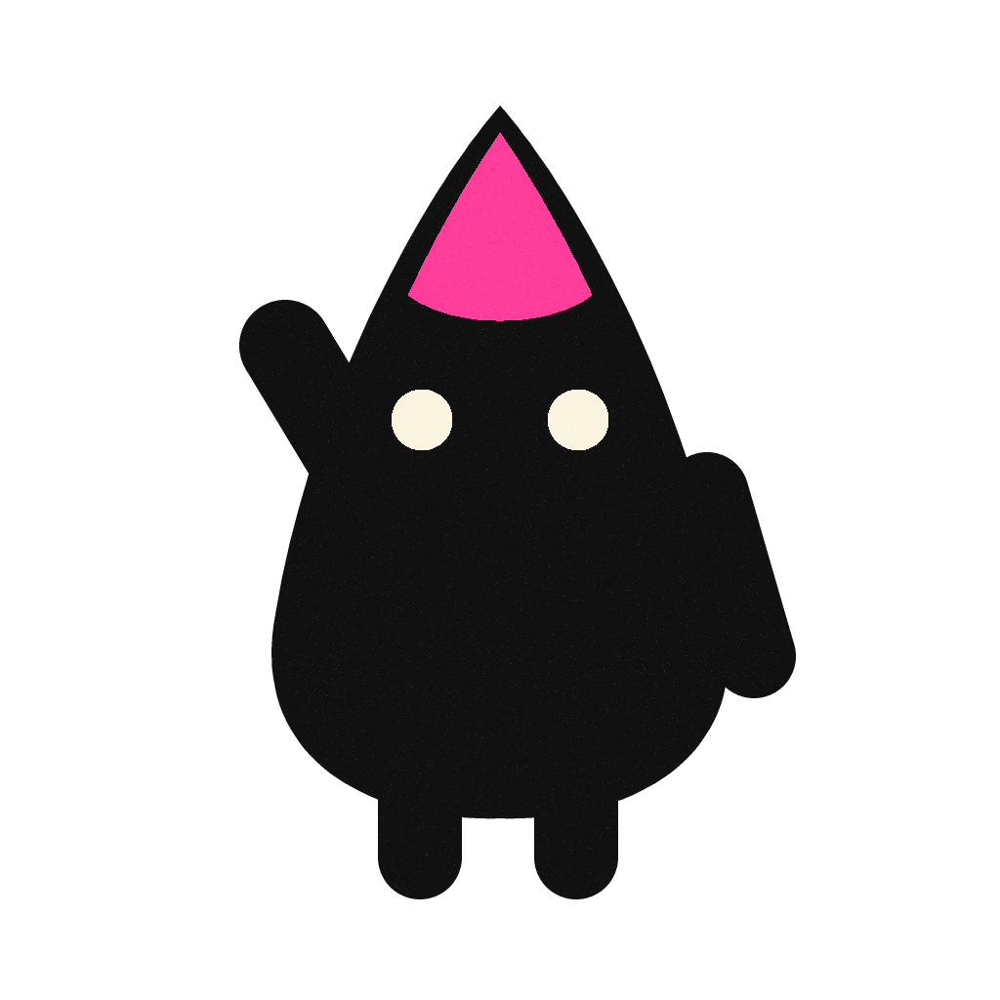
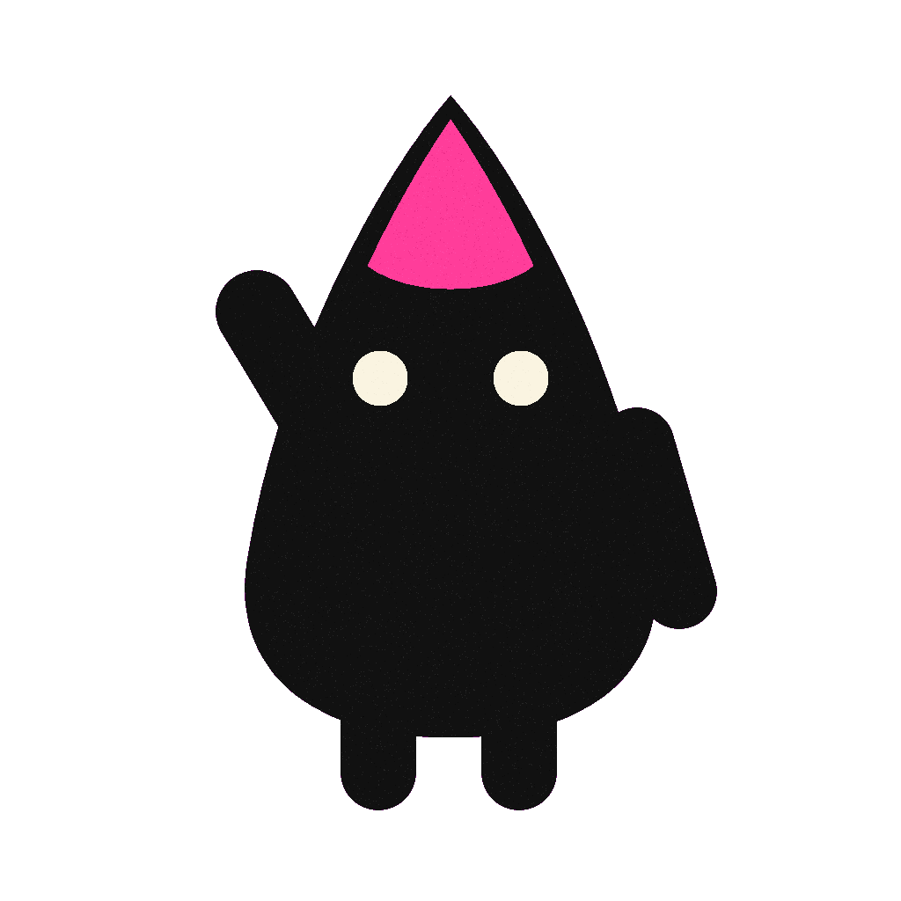
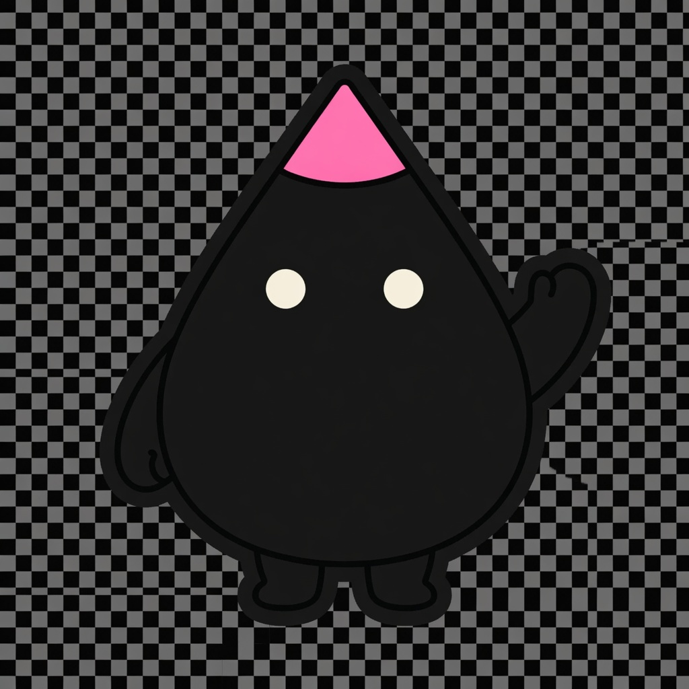
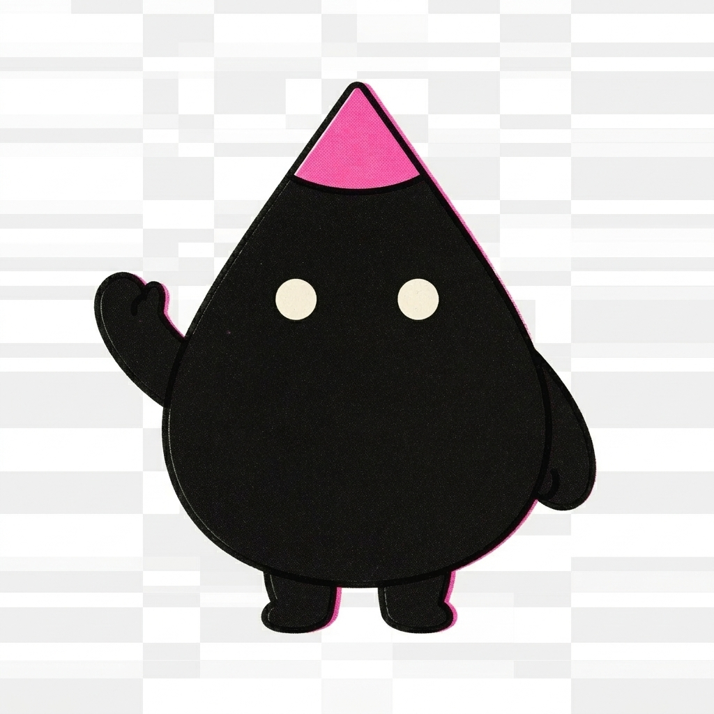
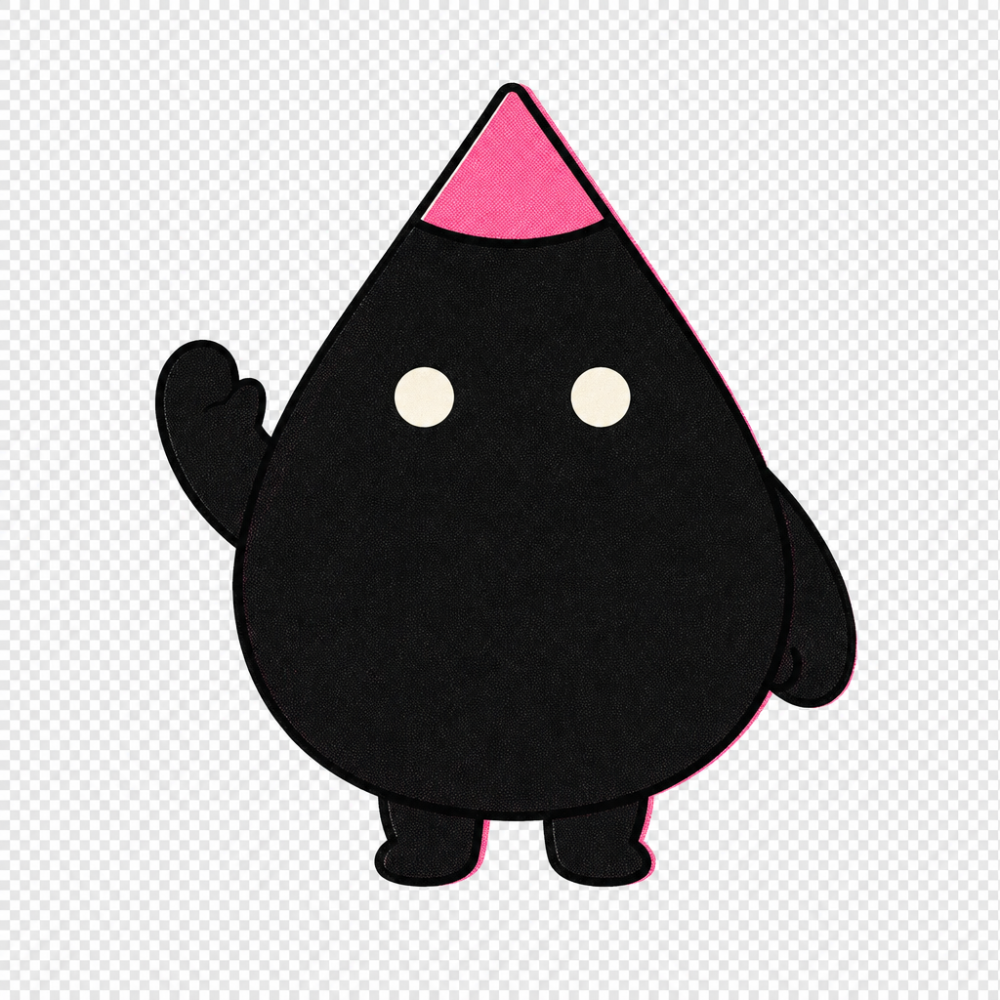
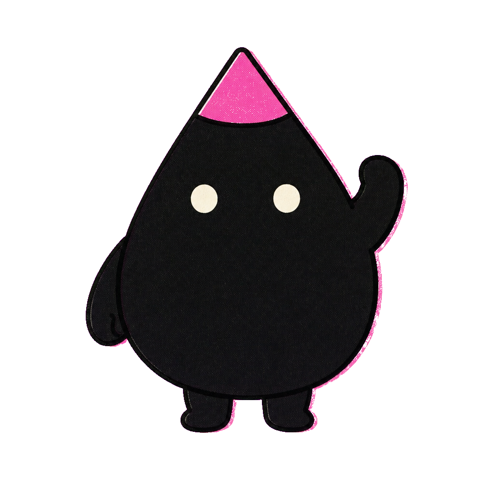

Same Blot cutout prompt and reference sheet across backends. Prompt-native asks for a real alpha PNG (no --cutout). Chroma + script uses flat #FF00FF and illo's --cutout post-process. Checkerboard + blue strip show whether backgrounds are actually transparent.
Takeaways
| Backend / model | Prompt-native (no script) | Chroma + --cutout script |
|---|---|---|
| Codex CLI (gpt-image-2) |  clean alpha format: .png · alpha channel: True transparent px: 776,976 · opaque: 269,627 · semi: 1,973 green fringe: 0 · magenta fringe: 0 · corner α: [0, 0, 0, 0] · 25 KB |  clean alpha format: .png · alpha channel: True transparent px: 778,130 · opaque: 270,446 · semi: 0 green fringe: 0 · magenta fringe: 0 · corner α: [0, 0, 0, 0] · 27 KB |
| OpenRouter · grok-imagine |  no PNG alpha (JPEG or opaque PNG) format: .jpg · alpha channel: False transparent px: 0 · opaque: 0 · semi: 0 green fringe: 0 · magenta fringe: 0 · corner α: [] · 195 KB | Failednote: PyYAML not installed — reading only /Users/tmchow/.config/illo/config.yaml's flat keys (nested keys like watermark need: python -m pip install 'PyYAML==6.0.2'). Cutout post-process failed: expected a PNG from the model. Re-roll with the cutout BACKGROUND line (#FF00FF). |
| OpenRouter · gemini-flash |  no PNG alpha (JPEG or opaque PNG) format: .jpg · alpha channel: False transparent px: 0 · opaque: 0 · semi: 0 green fringe: 0 · magenta fringe: 0 · corner α: [] · 419 KB | Failednote: PyYAML not installed — reading only /Users/tmchow/.config/illo/config.yaml's flat keys (nested keys like watermark need: python -m pip install 'PyYAML==6.0.2'). Cutout post-process failed: expected a PNG from the model. Re-roll with the cutout BACKGROUND line (#FF00FF). |
| OpenRouter · gpt-image-2-or |  fully opaque — no transparency format: .png · alpha channel: False transparent px: 0 · opaque: 1,048,576 · semi: 0 green fringe: 0 · magenta fringe: 808 · corner α: [255, 255, 255, 255] · 1452 KB |  clean alpha format: .png · alpha channel: True transparent px: 733,365 · opaque: 315,211 · semi: 0 green fringe: 1 · magenta fringe: 28 · corner α: [0, 0, 0, 0] · 1149 KB |